기계가공조립기능사 (2004-07-18 기출문제)
1과목: 기계가공법 및 안전관리
1. 선반에서 일감이 1회전 하는 동안, 바이트가 이동하는 거리는?
- 절삭량
- 회전수
- 회전량
- 이송량
(정답률: 87%)

2. 모방가공에 의한 형의 조각에서 기본적인 모방절삭 방식의 종류가 아닌 것은?
- 수직이차원
- 수평이차원
- 삼차원
- 수평삼차원
(정답률: 57%)
3. 일감에 회전운동을 주는 공작기계는?
- 밀링
- 선반
- 드릴링머신
- 세이퍼
(정답률: 92%)
4. 선반의 베드에 있는 리브(rib)의 역할은?
- 베드를 보강하여 변형과 진동을 방지한다.
- 릴리빙 작업을 용이하게 한다.
- 내마모성을 부여한다.
- 상자형으로 되어 있어 칩을 담을 수 있다.
(정답률: 69%)
5. 수평밀링 작업시 플레인 밀링커터의 고정위치를 조절하는 것은?
- 칼라(collar)
- 아버 지지부
- 고정 너트(nut)
- 베어링
(정답률: 54%)
6. 연삭가공에서 숫돌 바퀴에 무딤이 생겨 이것을 제거하는 데 사용되는 공구는?
- 트루잉 공구
- 로우딩 공구
- 드레서
- 드로어
(정답률: 62%)
7. 다음 중 뚫린 구멍을 깎아서 넓히거나, 구멍을 소정의 치수로 다듬는 가공은 어느것인가?
- 보링
- 드릴링
- 래핑
- 버니싱
(정답률: 89%)
8. 호브(래크)를 사용하여 기어(피니언)소재에, 인벌류트 치형을 정확히 가공할 수 있는 방법은?
- 형판법
- 성형법
- 오돈토 그래프
- 창성법
(정답률: 74%)
9. 막대, 관, 이형물 등을 다이스를 통해 밀어내는 방법으로 재료를 호퍼에 넣어 가열, 가압하여 연화, 가소화시켜 다이스의 형상에 따라 냉각 완성하는 방법은?
- 특수 성형법
- 트랜스퍼 성형법
- 압출 성형법
- 사출 성형법
(정답률: 63%)
10. 한계 게이지가 아닌 것은?
- 블록게이지
- 봉게이지
- 플러그게이지
- 링게이지
(정답률: 38%)
11. 직접 측정의 장점 및 단점에 관한 설명으로 틀린 것은?
- 장점 : 측정기의 측정범위가 다른 측정법에 비하여 크다.
- 장점 : 측정물의 실제 치수를 직접 읽을 수 있다.
- 단점 : 눈금의 읽음 오차가 생기기 쉽고, 측정하는 시간이 길다.
- 단점 : 양이 적고, 종류가 많은 제품의 측정에 불리하다.
(정답률: 45%)
12. 다음 중 광학적으로 길이의 미소범위를 확대하여 측정하는 것은?
- 버니어캘리퍼스
- 옵티미터
- 마이크로 인디케이터
- 사인바
(정답률: 67%)
13. 마이크로 미터(micrometer)스핀들 나사의 피치가 0.5mm이고 딤블을 100등분 하였다면 최소 눈금은?
- 0.01mm
- 0.001mm
- 0.⑤mm
- 0.0⑤mm
(정답률: 76%)
14. 선반의 안전작업에 대한 설명으로 옳지 않은 것은?
- 선반 작업 중 보안경을 착용한다.
- 선반 작업 중 면장갑착용을 금한다.
- 긴 공작물 가공시 방진구를 사용한다.
- 바이트는 길게 설치한다.
(정답률: 91%)
15. 일반 전기 스위치류의 취급에 관한 안전사항으로 옳지 않은 것은?
- 전기 스위치를 끊을 때에는 부하를 가볍게 하여 끊도록 한다.
- 전기 스위치의 위치는 잘 보이지 않고, 조작하기 어려운 곳이어야 한다.
- 정전은 검사기구로 확인한다.
- 메인 스위치의 개폐는 관계작업자에게 신호 및 연락을 해야 한다.
(정답률: 88%)
16. 셰이퍼에서 끝에 공구헤드가 붙어있고 급속귀환과 왕복운동을 하며, 공구대가 장치되는 부분은?
- 크로스레일
- 램
- 하우징
- 테이블 폭
(정답률: 42%)
17. 지름 120㎜, 길이 300㎜인 중탄소강봉을 초경합금 바이트로 절삭깊이 1.8㎜, 이송 0.35㎜,절삭속도는 150m/min 의 조건으로 선반 가공할 때 회전수는 얼마 정도인가?
- 298rpm
- 398rpm
- 498rpm
- 598rpm
(정답률: 63%)
18. 보링(boring)머신에서 할 수 없는 작업은?
- 구멍 뚫기
- 암나사 깎기
- 엔드밀 가공
- 기어 가공
(정답률: 59%)
19. 선반가공에서 면판을 사용할 때, 필요없는 부품은?
- 밸런싱 웨이트
- 맨드릴
- 앵글 플레이트
- 클램프
(정답률: 50%)
20. 선삭에서 테이퍼 절삭장치의 장점에 속하지 않는 것은?
- 공작물의 센터가 같은 중심위에 있으므로 센터 구멍이 상하지 않는다.
- 공작물의 길이에 관계없이 같은 테이퍼를 가공할 수 있다.
- 특별한 장치를 사용하지 않으며 가격도 싸다.
- 테이퍼 보링이 외경 선삭과 같이 용이하다.
(정답률: 43%)
2과목: 기계재료 및 요소
21. 스패너 작업할 때 유의 사항 중 옳은 방법은?
- 스패너 자루에 파이프를 끼워서 사용한다.
- 가동 조에 가장 큰 힘이 걸리게 한다.
- 고정 조에 가장 큰 힘이 걸리게 한다.
- 볼트 머리보다 약간 큰 스패너를 쓴다.
(정답률: 55%)
22. 다음 선반에 관한 각각의 설명으로 틀린 것은?
- 수직선반 : 짧고 지름이 큰 일감을 깎는 선반이다.
- 차축선반 : 철도차량용 차축을 깎는 선반이다.
- 공구선반 : 보통선반과 같은 정밀한 형식으로 되어 있고 테이퍼 깎기등의 부속 장치가 있다.
- 모방선반 : 유압식,유압기압식,전기식,전기유압식등의 자동모방장치를 이용하여 모방절삭하는 선반이다.
(정답률: 52%)
23. 그림과 같은 커터를 이용한 밀링 가공은?
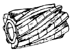
- 평면가공
- 각도가공
- 나사가공
- 기어가공
(정답률: 66%)
24. 호닝 작업의 특징 설명 중 틀린 것은?
- 앞에서 가공한 치수의 오차를 수정한다.
- 치수 정밀도를 높인다.
- 일감에 대해 회전 운동만으로 가공한다.
- 아름다운 면을 얻는다.
(정답률: 68%)
25. 양 센터로 지지한 시험봉을 다이얼 게이지로 측정을 하였더니 0.04㎜ 움직였다. 이 때 시험봉의 편심량은 몇 ㎜인가?
- 0.01
- 0.02
- 0.04
- 0.08
(정답률: 51%)
26. 핸드 탭 작업에서 2번 탭까지 사용하여 가공 하였을 때 전체적인 가공율은 얼마인가?
- 25%
- 55%
- 65%
- 80%
(정답률: 57%)
27. 광물성유 또는 혼합유의 극압 첨가제에 해당되지 않는것은?
- 질소(N)
- 황(S)
- 염소(Cl)
- 인(P)
(정답률: 39%)
28. 플레인 밀링 머신(plain milling machine)의 주요 부분 중 테이퍼 구멍이 있는 부분은?
- 오버 아암(over arm)
- 주축(spindle)
- 니이(knee)
- 새들(saddle)
(정답률: 47%)
29. 일감이 연강과 같이 연하고, 인성이 큰 재질을 윗면 경사각이 큰 공구로 절삭제를 사용하여 절삭 깊이를 작게하고 고속 절삭할 때 생기는 칩의 형태는?
- 유동형 칩
- 전단형 칩
- 경작형 칩
- 균열형 칩
(정답률: 72%)
30. 밀링가공에서 밀링커터의 회전방향과 반대방향으로 일감을 이송하는 작업방법은?
- 상향 밀링절삭
- 하향 밀링절삭
- 측면 밀링절삭
- 정면 밀링절삭
(정답률: 76%)
31. 절삭유(lubricant)의 작용 중에서 공구날의 윗면과 칩 사이의 마찰을 작게 하는 작용은 어느 것인가?
- 냉각 작용
- 윤활 작용
- 마찰 작용
- 방청 작용
(정답률: 61%)
32. 선반 가공에서 바이트로 일감을 절삭하는 깊이를 나타내는 절삭 깊이(depth of cut)는 어떻게 측정하는가?
- 측정하기 쉬운 쪽으로 측정한다.
- 절삭면에 대하여 45° 방향으로 측정한다.
- 절삭면에 대하여 수직 방향으로 측정한다.
- 절삭면에 대하여 수평 방향으로 측정한다.
(정답률: 64%)
33. 선반 가공(turning)으로 할 수 없는 작업은?
- 보링(boring) 작업
- 널링(knurling) 작업
- 드릴링(drilling) 작업
- 인덱싱(indexing) 작업
(정답률: 75%)
34. 센터나 척을 사용하지 않고 일감의 바깥면을 연삭하는 기계로서 일감을 연속적으로 밀어 넣을 수 있어 대량 생산에 적합한 연삭기는?
- 원통 연삭기
- 만능 연삭기
- 평면 연삭기
- 센터리스 연삭기
(정답률: 76%)
35. 드릴 작업의 안전수칙에 위배되는 것은?
- 큰 구멍을 뚫을 때에는 먼저 작은 구멍을 뚫는다.
- 드릴 작업시 장갑은 착용하지 않는다.
- 일감은 반드시 바이스에 물리고 드릴링한다.
- 얇은 판을 드릴링 할때에는 손으로 잡고 한다.
(정답률: 88%)
36. 주철의 결점인 여리고 질기지 못한 결점을 보충, 강인한 조직으로 하여 단조를 가능하게 만든 것은?
- 칠드 주철
- 회주철
- 가단 주철
- 백주철
(정답률: 60%)
37. 다음 중 비중이 가장 작은 금속은?
- 은(Ag)
- 마그네슘(Mg)
- 구리(Cu)
- 금(Au)
(정답률: 82%)
38. 시편의 표점거리를 100㎜, 지름을 14㎜, 최대하중을 5,000㎏f에서 시편이 파단되었다. 연신율을 계산하면? (단, 연신된 길이는 10㎜이다.)
- 12.5%
- 15.54%
- 10%
- 17.86%
(정답률: 36%)
39. 다음 중 가장 큰 회전력을 전달할 수 있는 키는?
- 안장 키
- 평 키
- 묻힘 키
- 스플라인
(정답률: 66%)
40. 두 축의 중심선이 만나는 경우에 쓰이는 기어는?
- 헬리컬 기어
- 래크 기어
- 베벨 기어
- 하이포이드 기어
(정답률: 45%)
3과목: 기계제도(절삭부분)
41. 기계운동을 정지 또는 감속 조절하여 위험을 방지하는 장치는?
- 기어
- 브레이크
- 마찰차
- 커플링
(정답률: 88%)
42. 하중에 의하여 물체 내부에 발생하는 저항력을 무엇이라 하는가?
- 반력
- 응력
- 변형률
- 동하중
(정답률: 79%)
43. 냉간 가공을 한 청동제의 파이프, 봉재 등이 저장 중에 자연히 균열이 생기는 수가 있다. 이것을 무엇이라고 하는가?
- 시기 균열
- 가공 균열
- 자연 균열
- 열처리 균열
(정답률: 83%)
44. 필요한 부분에만 금형을 배치한 모래형에 쇳물을 주입하여 금형에 접촉된 부분이 급냉 경화되고 내부는 연한 조직이 되는 주철은?
- 회주철
- 칠드주철
- 가단주철
- 고급주철
(정답률: 60%)
45. 체결용 볼트에서 리드(lead)의 설명으로 바른 것은?
- 1회전시 작용되는 토오크
- 1회전시 이동한 거리
- 나사산과 산의 거리
- 1회전시 원주의 길이
(정답률: 81%)
46. 브레이크의 용량을 결정하는 인자와 관계가 가장 먼것은?
- 브레이크의 형상
- 제동 압력
- 마찰계수
- 드럼의 원주 속도
(정답률: 48%)
47. 공구용으로 사용되는 비금속재료가 아닌 것은?
- 다이아몬드
- 서멧
- 초경공구
- 고속도강
(정답률: 38%)
48. 주철의 성질을 가장 옳바르게 설명한 것은?
- 탄소의 함유량이 2.0% 이하이다.
- 인장강도가 강에 비하여 크다.
- 소성변형이 잘된다.
- 주조성이 우수하다.
(정답률: 60%)
49. SI단위의 기본 단위가 아닌 것은?
- 질량
- 힘
- 길이
- 시간
(정답률: 45%)
50. 2개의 너트를 사용하여 너트가 풀리는 것을 방지하는 너트의 풀림 방지법은?
- 와셔에 의한 방법
- 로크너트에 의한 방법
- 자동 죔 너트에 의한 방법
- 멈춤나사에 의한 방법
(정답률: 68%)
51. 기계제도에서 물체의 보이는 부분의 형상을 나타내는 외형선으로 사용하는 선은?
- 가는 실선
- 굵은 일점쇄선
- 굵은 실선
- 가는 일점쇄선
(정답률: 72%)
52. 최종 가공다듬질 상태에서 구비해야할 부품에 대한 사항을 완전히 나타내기 위하여 필요한 모든 정보를 기록한 도면의 명칭으로 가장 적합한 것은?
- 확대도
- 부품도
- 배치도
- 조립도
(정답률: 76%)
53. 기계제도에서 현의 길이 표시로 가장 적합한 것은?
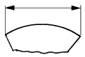
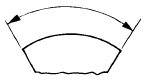
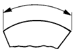
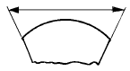
(정답률: 69%)
54. G7/h6 이란 어떤 끼워 맞춤인가?
- 구멍 기준식에서 헐거운 끼워 맞춤
- 축 기준식에서 헐거운 끼워 맞춤
- 구멍 기준식에서 억지 끼워 맞춤
- 축 기준식에서 억지 끼워 맞춤
(정답률: 36%)
55. 다음 중 기하공차의 종류 모양공차, 자세공차, 위치공차 중에서 자세공차를 나타내는 것은?
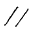
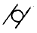
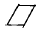
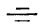
(정답률: 52%)
56. 가공으로 생긴선이 다방면으로 교차 또는 무방향임을 나타내는 기호는?
- X
- M
- C
- R
(정답률: 71%)
57. 10 - ø15 FR. 깊이 20 으로 표시된 가공 구멍치수의 해독으로 틀린 것은?
- 가공지름 15mm
- 줄다듬질 가공
- 구멍수 10개
- 구멍가공 깊이 20mm
(정답률: 70%)
58. 보기의 정면도와 좌측면도에 가장 적합한 평면도는?
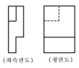
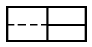
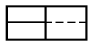
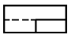
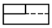
(정답률: 48%)
59. 보기 입체도를 화살표 방향으로 투상한 도면으로 가장 적합한 것은?
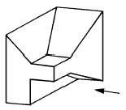
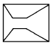
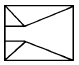
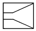
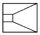
(정답률: 78%)
60. 보기 입체도에서 화살표 방향을 정면도로 했을 때 평면도로 가장 적합한 것은?
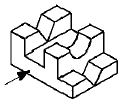
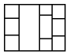
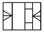
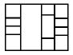
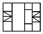
(정답률: 73%)
선반에서 일감이 1회전하는 동안 바이트가 이동하는 거리는 이송량이기 때문입니다. 이송량은 바이트가 일감의 지름을 따라 이동하는 거리를 의미합니다. 따라서 회전수나 회전량, 절삭량은 일감과 관련된 값이며, 이동 거리를 나타내는 이송량과는 다른 개념입니다.